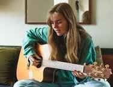

I'm ROBILYN and JENNICAH we are,both senior high school students specializing in ICT.Together,we enjoy working on creative digital projects, exploring video editing and enhancing our technical skills. outside of our studies ROBILYN loves reading books and trying new hobbies,while JENNICAH is passionate about arts discovering new ways to express creativity.
Me as robilyn my skills is drawing because i practice every day.I spend hoursketching and experimenting with different techniques to improve my craft. My passion for art drives me to keep pushing myself to new heights,and I'm always excited to see my skills evolve.Whether i'm drawing from life or from imagination, i feel fully alive and engaged in the creative process.
Me as jennicah my skills is playing a guitar offers a lot of benefits-its a versatile instrument, easy to carry around, and allows you to express creativity through music. plus,it can be really fun to learn and can bring a sense of accomplishment when you master new songs or techniques
Robilyn, my challenge is ict strand because i find it difficult to understand the complex programming concept and theories. Although i'm interested in technology and how it can be used to solve real-world problem,i struggle to keep up with the fast-paced and ever-changing nature of the field. Additionally i sometimes fint it hard to apply theoritical knowledge to practical problems, which can befrustrating. despite these challenges, I'm determine to perserve and work hard to improve my skills and understand of ICT.
JENNICAH, my challenge in ict strand limited access to technology, inadequate technical support, lack of teacher training in using ICT tools, rapidly evolving technology.
if you love playing/editing as much as i do?let's talk about that how awaesome they are!we can code while we play.